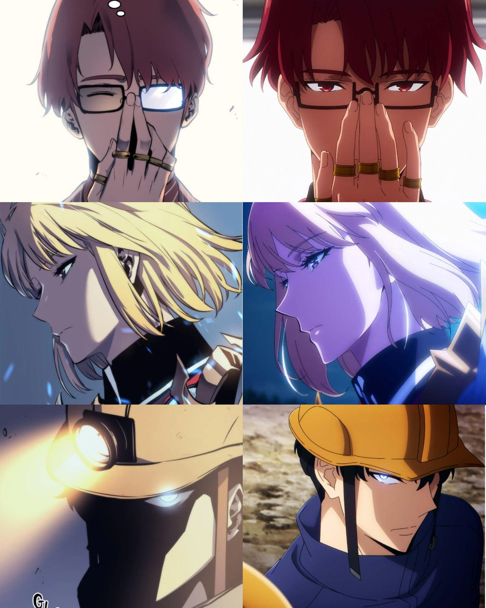

Solo Leveling: Análisis exhaustivo de la adaptación animada

Sung Jin-Woo en su forma más poderosa
La esperadísima adaptación animada de Solo Leveling, el webtoon coreano que revolucionó el género de fantasía oscura, ha llegado con altas expectativas. Analizamos a fondo cómo la serie animada ha interpretado el material original.
Diferencias con el webtoon
Comparación lado a lado: webtoon (izq) vs anime (der)
Estas son las principales diferencias encontradas hasta ahora:
- Escenas de combate extendidas: Las batallas, ya espectaculares en el webtoon, ganan aún más dinamismo y duración en la adaptación.
- Nuevos diálogos: Se han añadido conversaciones que profundizan en personajes secundarios como Cha Hae-In o los miembros del gremio.
- Diseño mejorado de sombras: Los efectos visuales de las habilidades de Jin-Woo son más detallados y aterradores.
- Reordenamiento de eventos: Algunos arcos menores han sido reorganizados para mejorar el ritmo narrativo.
- Nuevas escenas de transición: Momentos de la vida cotidiana de Jin-Woo que no aparecían en el original.
Personajes clave y su adaptación

El elenco principal en su versión animada
Sung Jin-Woo
De E-rank a Cazador Nacional, su evolución es fiel al original pero con mayor énfasis en su conflicto interno.
Igris
El General de las Sombras conserva su imponente presencia pero gana más diálogos y desarrollo.
Cha Hae-In
Su relación con Jin-Woo está más desarrollada desde etapas más tempranas.
Recepción crítica
La adaptación ha recibido elogios unánimes por su fidelidad al espíritu del webtoon mientras introduce mejoras inteligentes. Particularmente destacados son:
- La dirección de arte que captura perfectamente el estilo oscuro del original
- Las actuaciones de voz, especialmente de Jin-Woo y el Rey Antares
- La banda sonora épica que acompaña las escenas clave